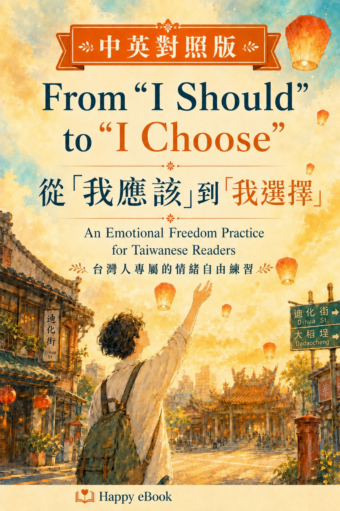

電子書
從「我應該」到「我選擇」/ From "I Should" to "I Choose" 中英對照版
你不是不努力

從「我應該」到「我選擇」/ From "I Should" to "I Choose" 中英對照版
你不是不努力
你不是不努力。你每天認真上班、按時繳帳單、週末回家吃飯、逢年過節包紅包——但你總覺得，好像一輩子都在滿足別人的期待。 這本書要給你的東西很簡單：兩個字——Let Them。 讓他們說。讓他們做。讓他們決定。讓他們失望。讓他們不喜歡你。讓他們過他們的人生。這不是擺爛，不是冷漠。這是一個人生界線的重新設定：你不再把能量花在你不能控制的事情上，而是全部收回來，放在你真正能改變的地方——你自己。 這本書不是翻譯書，不是心靈雞湯。它是一本從台灣人真實生活出發的實踐手冊：親戚的靈魂拷問、職場的情緒勒索、家人的「為你好」、社群上的比較焦慮——每一章都有具體的對話腳本、練習方法，以及三十天的 Let Them 挑戰計畫。中英雙語對照編排，英文在前、中文在後，學心理工具同時練英文。 從今天開始，從「我應該」到「我選擇」